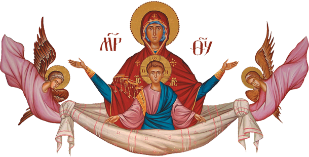

🏠

Богородице Дјево
Богородице Дјево, радуј се благодатна Маријо,
Господ је с Тобом; благословена си међу женама и
благословен је Плод утробе Твоје, јер си родила
Спаситеља душа наших.
Слава Оцу и Сину и Светоме Духу, сада и
увек и у векове векова, Амин.
Господе помилуј, Господе помилуј, Господе помилуј!
Господе Исусе Христе, Сине Божији,
ради молитава пречисте Твоје Матере,
преподобних и богоносних отаца наших и
свих светих, спаси ме грешнога, Амин.
ИМЕ ПРЕСВЕТЕ БОГОРОДИЦЕ ПРОГОНИ СВЕ ДУХОВЕ - Једна Монахиња у Манастиру
постом и молитвама подвизаваше се али је нечастиви много варао преобразивши
се у светлог Анђела и долазио је беседити са њом о разним стварима.
Одговарао јој је на свако питање. Приликом исповести Свештеник је
упита како проводи свој монашки живот? Она одговори:
"Добро, молитвама твојим честити оче. " Чувши Свештеник овакав горди
одговор снужди се и рече јој: "Немој више говорити тако, треба да си
смирена сасвим и ако све доброте испуњаваш треба да говориш да си грешна и
слично томе. Али Монахиња одговори: "Знај оче да Анђео долази са небеса и
просвеђује ме, зато сам тако рекла".
Свештеник се опомену Апостолског учења где говори: "И никакво чудо; јер се сам
сатана претвара у анђела светлости (2 Кор. 11,14), па јој рече: "Кад ти
следећи пут дође тај анђео у посету ти се прекрсти и одма почни да изговараш
молитву "Богородице Дјево", ако он буде остао до краја молитве биће то прави Анђео,
ако ли исчезне то знај да је нечастиви искушитељ, хоће да те превари и баци у
крајњу беду. Овај спасоносни савет прими Монахиња и када јој се поново јави
тај Анђео она се прекрсти и одмах почне изговарати молитву "Богородице Дјево"
истог момента јави се видно Пресвета Богородица а лажни анђео - нечастиви одмах
ишчезе као дим. Монахиња је све то гледала и од страха је дрхтала тако да се и
разболела. Дуго се после тога опорављала.
Кад се коме јави било какво виђење јавно или у сну, одмах треба да се "правилно"
прекрсти а потом да изговори молитву "Богородице Дјево". Свако треба да зна
да се зли духови претварају (узимају облик) у Ађела, сваког Светитеља па се
представљају и у самог Исуса Христа. Али не могу носити "Крст" или се преобразити
у лик Пресвете Богородице, смета им освештана Богородичина икона. У данашње време
разни људи долазе нам на врата, пресрећу на улици итд. Немојмо се расправљати ни
са ким, него себе прво оградимо крсним знаком али правилно а потом изговарајмо:
"Богородице Дјево" молитву и видећете коме такви служе. Јер ако њиховим господарима
смета ова молитва, како ће тек њиховим слугама засметати. Многи су са вером нашли утеху у овој молитви.
БОГОРОДИЧИНО ПРАВИЛО - Изговарај свакодневно молитву "Богородице Дјево" по сто педесет пуга на
дан и том молитвом ћеш се спасити. Ово правило је устројено од саме Пресвете Владичице
Богородице наше још негде у осмом веку, и читав један дуги временски период држали су га готово сви Хришћани.
Ми Православни верници смо га давно заборавили и занемарили. занемаривши тако и послушање
Богородици Путеводитељки, Заштитници и Радости нашој. Свети Серафим Саровски нас је
подсетио на њега. Људи су долазили Оцу Серафиму са разним и врло тешким проблемима и
он је поред кратког молитвеног правила сваком препоручивао "чудотворну" молитву "Богородице Дјево",
да сваки дан пажљиво прочита одједном сто педесет пута.
Свако ко је по савету Оца Серафима држао ово правило. остао му је захвалан читавог живота.
По смрти Св. Серафима (1759-1833.) пронађена је у његовој келији (монашкој соби) необична
свеска са описима чуда која су се догађала као плод оним верницима који су држали
послушање Богородици - Архимандрит Захарија (Старац Захарија чудесник љубави - монахиња Јелисавета).
ПОСЛУШАЊЕ БОГОРОДИЦИ - Монах у Русији чувши за "Богородично правило" узе на себе подвиг,
и тајно у својој келији сваке вечери одједаред читао са поклонима 300 пута "Богородице Дјево"
Са великом вером, надом, и љубављу молио се Пресветој Богородици анђелским поздравом, и гле чуда,
после извесног времена Богомати обдари свог молитвеника даром моћи да лечи многе болести, и да
открива мисли људског срца. (Матеј 6,6) (преписано на Св.Гори 1991.год.)
⬆ Врх странице